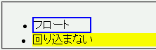
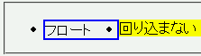

clearプロパティの値がnone以外になっている要素がリストアイテム要素の内部にあるとき、親のリストアイテム要素の外部にあるフロートに対して回りこみを抑制することができない。
<ul> <li> <div style="float:left; width:5em; border:2px solid blue;">フロート</div> </li> <li> <div style="clear:left; background:yellow;">回り込まない</div> </li> </ul>
2つ目のli要素内にあるdiv要素の内容物は、1つ目のli要素内にあるdiv要素のボックスより下にあるはずです。
Opera7.23標準モード
Netscape7.1標準モード